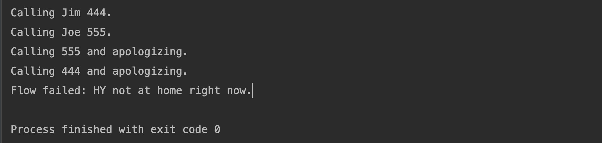

通过TaskFlow库，可以更容易地控制任务（Task）的执行。
目录
示例。
1 | from taskflow import engines |
task
这个示例首先定义了三个task：CallJim、CallJoe和CallHY。在TaskFlow库中，task是拥有执行（execute）和回滚（revert）功能的最小单位（TaskFlow中最小的单位是atom，其他所有类包括Task都是Atom类的子类）。在Task类中，允许开发者定义自己的execute函数和revert函数，分别用来执行task和回退task到之前一次的执行结果。
然后新新建一个线性流flow，并在其中顺序加入上述3个task对象。TaskFlow中的流flow用来关联各个task，并且规范这些task之间的执行和回滚顺序。
TaskFlow中所支持的流类型。
| 流类型 | 说明 |
|---|---|
| linear_flow.Flow | 线性流，流中的task/flow按加入顺序执行，按加入顺序的倒序回滚。 |
| unordered_flow.Flow | 无顺序流，流中的task/flow的执行和回滚可以按任意顺序。 |
| graph_flow.Flow | 图流，流中的task/flow按照显式指定的依赖关系，或者通过其间provides和requires属性之间的隐含依赖关系，来执行或回滚。 |
这个示例中，由于采用的是线性流，所以这个流中task的执行顺序为：CallJim -> CallJoe -> CallHY，回滚顺序是其倒序。

retry
流中不仅可以加入任务，还可以嵌套加入其他的流。此外，流还可以通过retry来控制当错误发生时，该如何重试。
TaskFlow支持的retry类型。
| Retry类型 | 说明 |
|---|---|
| AlwaysRevert | 错误发生时，回滚子流。 |
| AlwaysRevertAll | 错误发生时，回滚所有子流。 |
| Times | 错误发生时，重试子流。 |
| ForEach | 每次错误发生时，为子流中的atom提供一个新的值，然后重试，直到成功或者此retry中定义的值用光为止。 |
| ParameterizedForEach | 类似ForEach，但是是从后台存储中获取重试的值 |
示例。
1 |
|
上面的示例，构造了一个线性流f1，它按顺序执行任务t1、子线性流f2、和任务t4。子流f2按序执行任务t2和t3。
子流f2定义了ForEach类型的retry“r1”。当任务t2或者t3失败时，子流t2首先会回滚。然后“r1”会指导子流f2使用值“a”来重新运行。如果再次失败，子流f2回滚后会再次使用“b”运行；仍然失败后回滚使用值“c”运行。如果值“c”也运行失败，由于“r1”中能够提供的值已经被完全用完，子流f2回滚后不会重新运行。
engine
TaskFlow库中的engine用来载入一个flow，然后驱动flow中的task/flow运行。可以通过engine_conf来指明不同的engine类型。
| engine类型 | 说明 |
|---|---|
| ‘serial’ | 所有的task都在调用engine.run的那个线程中运行。 |
| ‘parallel’ | task可能会被调度到不同的线程中并发运行。 |
| ‘worker-based’ | task会被调度到不同的worker中运行。 一个worker是一个单独的专门用来运行某些特定task的进程， 这个worker进程可以在远程机器上，利用AMQP来通信。 |
task和flow的输入/输出
示例。
1 | from taskflow.patterns import graph_flow as gf |
上面的示例中，定义了一个Task对象Adder，作用是完成一个加法。接下去生成一个图类型的流root，其中的task都通过provides和rebind来指明它们的输出和输入。
在engine运行时，通过store参数为流root提供所需要的输入参数，engine会把store的值保存在后台存储中：在执行各个task的过程中，各个task的输入都是从后台存储中获取，输出都保存在后台存储中。这个程序的输出结果如下：
1 | Single thread engine result {'x1': 4, 'y5': 9, 'y4': 7, 'y1': 1, 'x2': 12, 'x3': 16, 'y3': 5, 'y2': 3, 'x6': 41, 'x7': 82, 'x4': 21, 'x5': 20}. |
TaskFlow中的Task和Retry都是Atom的子类。对于任何一种Atom对象，都可以通过requires属性来了解它所要求的输入参数，和通过provides属性来了解它能够提供的输出结果的名字。requires和provides的类型都是包含参数名称的集合（set）。
requires
Task对象的requires可以由execute方法获得。比如示例中的Adder对象，由于execute方法的参数是execute(self, x, y)，所以它的requires为：
1 | Adder().requires |
1 | class MyTask(task.Task): |
1 | class UniTask(task.Task): |
此外，也可以在创建Task时明确指定它的输入参数要求，这些参数在调用execute()方法时可以通过kwargs获得：
1 | class Dog(task.Task): |
rebind
在有些情况下，传递给某个task的输入参数名称和其所需要的参数名不同，这个时候可以通过rebind来处理。
1 | from taskflow import task |
provides
task的输出结果一般是指其execute()方法的返回值。但是由于Python返回值是没有名字的，所有需要通过Task对象的provides属性指明返回值以什么名称存入后台存储中。根据execute()返回值类型的不同，provides可以有不同的方式指定。
如果execute()方法返回的是一个单一的值。
1
2
3
4
5
6
7
8
9
10
11
12
13
14
15
16
17
18
19
from taskflow import task
from taskflow import engines
from taskflow.patterns import linear_flow as lf
class TheAnswerReturningTask(task.Task):
def execute(self, *args, **kwargs):
return 24
t = TheAnswerReturningTask(provides='the_answer')
flow = lf.Flow('linear').add(t)
result = engines.run(
flow=flow,
engine_conf='serial'
)
result
{'the_answer': 24}如果execute()方法返回元组tuple。
1
2
3
4
5
6
7
8
9
10
11
12
13
14
15
16
17
18from taskflow import task
from taskflow import engines
from taskflow.patterns import linear_flow as lf
class BitsAndPiecesTask(task.Task):
def execute(self, *args, **kwargs):
return 'Bits', 'Pieces'
t = BitsAndPiecesTask(provides=('bits', 'pieces'))
flow = lf.Flow('linear').add(t)
result = engines.run(
flow=flow,
engine_conf='serial'
)
result
{'bits': 'Bits', 'pieces': 'Pieces'}如果execute()方法返回字典。
1
2
3
4
5
6
7
8
9
10
11
12
13
14
15
16
17
18from taskflow import task
from taskflow import engines
from taskflow.patterns import linear_flow as lf
class BitsAndPiecesTask(task.Task):
def execute(self, *args, **kwargs):
return {'Bits': 123, 'Pieces': 321}
t = BitsAndPiecesTask(provides={'Bits', 'Pieces'})
flow = lf.Flow('linear').add(t)
result = engines.run(
flow=flow,
engine_conf='serial'
)
result
{'Bits': 123, 'Pieces': 321}